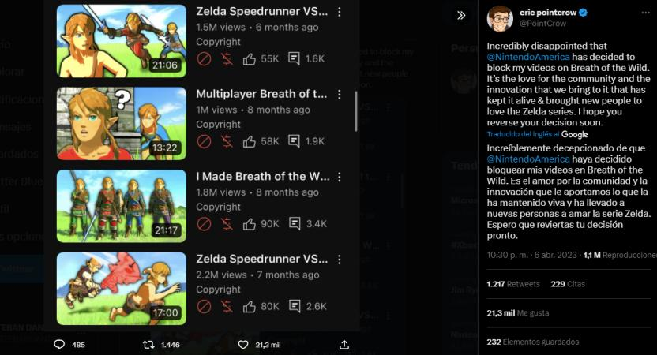

Con el tiempo que lleva The Legend of Zelda: Breath of the Wild en el mercado, los usuarios han creado distintos mods que permiten cambiar música,
texturas, y skins para los personajes sin afectar excesivamente la jugabilidad. Para sorpresa de los jugadores, el Youtuber PointCrow ofreció 10mil dólares
para aquel que lograse crear un mod multijugador para el juego de Nintendo, y, finalmente este 4 de abril, publicó un mod de Zelda BotW que permite
compartir el mundo con otros jugadores, algo que no tiene muy contenta a la compañía dueña de la franquicia.
Este mod, creado por los usuarios AlexMague y Sweet, que fueron los ganadores de los 10mil dolares ofrecidos por PointCrow,
utiliza el juego base de la versión de Nintendo WiiU, y añade funciones multijugador, que, según aquellos que lo probaron,
es bastante completo y bien construido, ya que ofrece una sincronización excelente entre misiones de los distintos jugadores,
lo que permite que cada uno pueda avanzar en desbloqueos de santuarios y misiones de forma independiente.
Sin embargo, Nintendo, empresa conocida por denunciar y dar de baja videos y contenido hecho por fans basado en sus videojuegos, ha tomado un rol agresivo contra PointCrow y su canal de Youtube, que tal como menciona el youtuber, no dejaban de denunciar, bloquear, desmonetizar e incluso, dar de baja todos los videos que creaba para publicitar el mod en multijugador de Breath of the Wild.
La parte positiva de la historia es que PointCrow actualizó sus disputas con Nintendo y logró que le permitieran subir videos de la versión multijugador, aunque sin monetizar, lo que sigue siendo una victoria. Por su parte, el mod se encuentra disponible en el canal de Discord de PointCrow y se puede descargar totalmente gratis, por lo que es una buena propuesta para probar The Legend of Zelda: Breath of the Wild desde una perspectiva colaborativa si no tienes Nintendo Switch o si estás a la espera de su secuela: Tears of the Kingdom.